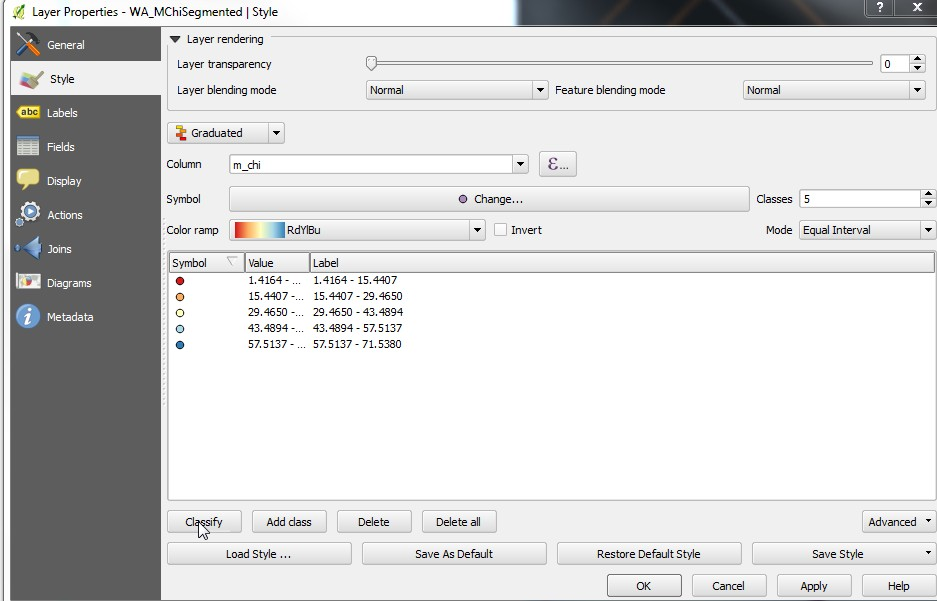

Preface by Simon M Mudd
Welcome to a series of tutorials about LSDTopoTools, that serve both as a basis of a short course as well as practical excercises for a course at Edinburgh called Eroding Landscapes. Hopefully by following these tutorials you will be able perform some simple analyses using LSDTopoTools and will be encouraged to explore its full functionality.
1. Getting Started
Welcome to this short course on LSDTopoTools. There are three collections of people who might be taking this course:
-
Research students and staff at the University of Edinburgh.
-
Students taking Eroding Landscapes and other taught students (BSc, MSc, MEarthSci) at the University of Edinburgh.
-
People from outside of Edinburgh who want to learn how to use LSDTopoTools.
The main difference between these groups is that if you are at Edinburgh you can use our Linux servers. If you are working outside Edinburgh’s network you will need to set up your own Linux server on your desktop computer or laptop using a clever bit of software called Vagrant. Don’t worry if that sounds a bit complex, we have instructions to walk you through the process, which works on any operating system (e.g., Windows, Linux, or MacOS) and is all based on open-source software.
The only substantive difference between taught students and research students at Edinburgh is the amount of disk storage you are allocated on our servers. If you are a taught student and are going to be using large datasets you should either install LSDTopoTools on your own computer or talk to the GeoSciences IT team about getting more storage.
1.1. Starting up at Edinburgh
If you are at Edinburgh, most of the software you need for LSDTopoTools is already installed on our servers. So the main task you will have to get started is getting on to our servers.
If you are on a desktop, you will need the program NX. Using this program you can log in to our ssh portal. The instructions are here: http://www.ed.ac.uk/geosciences/intranet/it/working-remotely
Once you get into NX, you should open TWO terminal windows. To open a terminal window in nx just right click and select "terminal".

1.1.1. If NX is not working
Sometimes NX misbehaves, so you can also use a secure shell client. Our lab computers have something called either SSH client or SSH Secure Shell: select the client on the start menu and then begin a new session. You will need to use the address ssh.geos.ed.ac.uk, and then your username, and click on password control. You will then need to enter your EASE password at the prompt. You should start TWO sessions. These windows are the equivalent of a terminal window in NX.
1.2. Move into a decent server
When you start up in either NX or an SSH client, you get dumped onto an old, slow server. To switch to a new, faster one, you need to use the ssh command:
$ ssh achray.geos.ed.ac.ukYou might need to enter your EASE password again here.
1.3. Starting up outside Edinburgh
If you are not in the School of GeoSciences at the University of Edinburgh, you will need to set up your own Linux environment. The full instructions can be found at this website: http://lsdtopotools.github.io/LSDTT_book/#_installing_lsdtopotools_using_virtualbox_and_vagrant
Below are quick instructions. If you have trouble, follow the link above and then go through the complete instructions.
1.3.1. After you have set up a vagrant server
Once you have a vagrant server set up, you should start TWO ssh sessions into the Linux server.
1.4. Setting up directories
LSDTopoTools expects your data to be organised in a certain way. You can either do this yourself by hand (we will call this the "hard way") or use a python script we have prepared ("easy way"). If you follow directions to set up the easy way you don’t need to follow instructions for the hard way.
1.4.1. Setting up directories the easy way
| If you just plan on using our tools this section describes the best way to set up LSDTopoTools. You only need to read the sections about doing things the hard way if you are going to develop our software, or are going to be using new releases of our research code. |
-
The first thing you need to do is get our python program LSDTopoToolsSetUp.py. It lives here: https://github.com/LSDtopotools/LSDAutomation/blob/master/LSDTopoToolsSetup.py
You will need to run this file in your Linux environment, so in a terminal window type:
$ wget https://raw.githubusercontent.com/LSDtopotools/LSDAutomation/master/LSDTopoToolsSetup.pyIf wgetdoesn’t work, you can follow the link: https://raw.githubusercontent.com/LSDtopotools/LSDAutomation/master/LSDTopoToolsSetup.py
Copy the text, paste it into a text editor and save it asLSDTopoToolsSetup.py. -
Now, in your terminal window run this script. It has some options:
-
For the most basic setup, type:
$ python LSDTopoToolsSetup.py -id 0In our Vagrant setup, this will install everything in the root directory (you can got there with
$ cd /), which is the default setup generated by our Vagrantfile. If you are not in vagrant the LSDTopoTools directories will be in your home directory (you can get there with$ cd ~). -
If you don’t want LSDTopoTools in your home directory, you can install it in your current directory with:
$ python LSDTopoToolsSetup.py -id 1
-
-
It turns out the
LSDTopoToolsSetup.pytool has a number of options but we will explain these later. If you want a preview of what it does, you can call its help options:$ python LSDTopoToolsSetup.py -h
1.4.2. Setting up directories the hard way
Our script LSDTopoToolsSetup.py automates creation of the correct directories and installing the LSDTopoTools programs. If you have used that script you don’t really need to read this, but if you are unfamiliar with Linux at some point you will need to come to terms with the way our directories are structured, how to move between directories, finding things in directories, etc., so you might consider reading this section when you have the chance.
Understanding where your files are is ESSENTIAL. If you don’t know where your files are it will lead to extreme frustration! You will need to work with files and directories in Linux. There is an entire section in our book about this.
The crucial thing is that we will have separate directories for DATA and PROGRAMS. So you will need to make directories for these.
For the purposes of this workshop, we will use a standardised directory structure. If you NOT at Edinburgh and using our vagrant setup, then this structure already exists!! If you are at Edinburgh you will need to make this structure. This is automated by the script LSDTopoToolsSetup.py but these instructions are here in case you want to do it by hand.
In Linux, to find out your current directory type the command pwd.
|
1.4.3. Directories the hard way if you are at Edinburgh
-
If you have just started an ssh or terminal window, you can find out where you are, it will look something like this:
$ pwd $ /home/MyUserName/In this case
MyUserNamewill be replaced by your own EASE name (e.g., smudd) -
Make a directory called
LSDTopoToolsusing themkdircommand and then go into it with thecdcommand:$ mkdir LSDTopoTools $ cd LSDTopoTools $ pwd $ /home/MyUserName/LSDTopoTools/Linux is case sensitive so LSDTopoToolsandlsdtopotoolsandLSDtopotoolsare three different directories!! Make sure you keep track of this!DO NOT use spaces in your file or directory names, EVER. -
Now make two new directories in the
LSDTopoToolsdirectory, calledGit_projectsandTopographic_projects. The only reason for these names is that the rest of the documentation uses these directory names.$ pwd $ /home/MyUserName/LSDTopoTools/ $ mkdir Git_projects $ mkdir Topographic_projects -
We are going to clone some data into the
Topographic_projectsdirectory. Even if you are going to use your own DEM this is handy because the cloned data folder also includes all the parameter files that we will use in this workshop:$ cd Topographic_projects $ git clone https://github.com/LSDtopotools/LSDTT_workshop_data.git -
This will make a folder
LSDTT_workshop_datainto which you can place your own data. It also contains two test DEMs from Scotland that we will use in the Eroding Landscapes course. -
Now go back into your
Git_projectsdirectory. If you have followed the above directions you will be sitting in theTopographic_projectsdirectory so go up a level and then down into theGit_projectsdirectory:$ cd .. $ cd Git_projects -
Now you need to clone some other repositories that have our code:
$ git clone https://github.com/LSDtopotools/LSDTopoTools_AnalysisDriver.git $ git clone https://github.com/LSDtopotools/LSDTopoTools_CRNBasinwide.git $ git clone https://github.com/LSDtopotools/LSDTopoTools_ChannelExtraction.git $ git clone https://github.com/LSDtopotools/LSDTopoTools_ChiMudd2014.git -
Great! Now you have everything you need for the workshop.
1.4.4. Directories the hard way if you are outside Edinburgh (or using your home computer)
If you have set up using our vagrantfiles, the correct directory structure is already in place. However you will need to clone the data for this workshop:
$ cd /LSDTopoTools/Topographic_projects
$ git clone https://github.com/LSDtopotools/LSDTT_workshop_data.git1.4.5. Directory structure
If you did this the easy way, you will have directories that look like this:
/LSDTopoTools
|--Git_projects
|----LSDTopoTools_AnalysisDriver
|----LSDTopoTools_ChiMudd2014
|--Topographic_projects
|----LSDTT_workshop_data
|----Test_dataIf you are in vagrant, the /LSDTopoTools directory will be in the root directory, whereas if you are in another system it will be in your home directory (which you can get to with cd ~), unless you told the setup tool to install in your current directory.
If you setup the hard way, you will have a few extra things (which the setup tool gets with some optional instructions):
/LSDTopoTools
|--Git_projects
|----LSDTopoTools_AnalysisDriver
|----LSDTopoTools_CRNBasinwide
|----LSDTopoTools_ChannelExtraction
|----LSDTopoTools_ChiMudd2014
|--Topographic_projects
|----LSDTT_workshop_data
|----Test_data1.5. Summary
At the end of this section you will have the directories and files you need to move on to the next stage of the workshop.
2. Simple surface metrics
In this section we will use the LSDTopoTools analysis driver program to calculate some new rasters. The analysis driver is good for doing simple calculations and routine analyses.
2.1. Making the analysis driver program
LSDTopoTools is distributed as source code in C++, so you have to turn it into a program using a compiler and a program called make.
If you used LSDTopoToolsSetup.py, all of that make stuff will have just happened automatically. You can skip past this section!
2.1.1. If you didn’t use LSDTopoToolsSetup.py
If you didn’t use LSDTopoToolsSetup.py, you need to use make yourself. If you have some familiarity with Linux then this should be rather painless.
It is easier to keep track of things if you have one terminal window for the directories with the source code (these are all in the Git_projects directory) and another terminal window inside directories where you keep your data (these are in the Topographic_projects directory).
|
-
Navigate into the
LSDTopoTools_AnalyisDriverdirectory, and then into the subdirectoryAnalysis_driver.$ cd /path/to/LSDTopoTools/ $ cd Git_projects/LSDTopoTools_AnalysisDriver/Analysis_driverThe
/path/to/bit can be replaced by your own path (in my case it is/home/smudd/). In vagrant this is simply/since our vagrant setup puts theLSDTopoToolsdirectory within the root directory. -
Then use
maketo compile the programs. You will get lots of warnings that can be ignored.$ make -f Drive_analysis_from_paramfile.make -
Once you have done this, you should see a file called
LSDTT_analysis_from_paramfile.outin this directory. That is the program we will use to make some new topographic data!
2.2. Running your first analysis
It is now time to do some number crunching of your DEM using LSDTopoTools. In this part we will get slope, curvature and hillshade rasters.
2.2.1. Looking at the example data
-
At this stage you should have a terminal window or secure shell window open in the
Analysis_driverdirectory. -
Use the SECOND terminal window to go to the data folder (if you’ve not got another window, or secure shell, open one now).
-
Use this second window to go to the
LSDTT_workshop_datadirectory:$ cd /path/to/LSDTopoTools/Topographic_projects/LSDTT_workshop_data/ -
We have provided an example parameter file in this directory. You can see all the stuff in the
LSDTT_workshop_datadirectory by using thelscommand:$ ls README.asc WAWater.bil Workshop_ChiTool.driver WA.bil WAWater.hdr WA.hdr Workshop_AD_example.LSDTT_driver -
The file you want is
Workshop_AD_example.LSDTT_driver. If you are using our Vagrant setup then this doesn’t need to be edited. But if you are running on an Edinburgh server or are using your own data, this file will need to be modified.
2.2.2. Modifying the LSDTT_driver file
-
Hopefully you know what a text editor is (if not read the box above!). Open
Workshop_AD_example.LSDTT_driverin a text editor. It looks like this# This is a driver file for LSDTopoTools # Any lines with the # symbol in the first row will be ignored # File information # IMPORTANT: you will need to modify the file path to reflect your directory structure # NOTE: If you want to use a smaller test DEM use WA instead of WAWater dem read extension: bil dem write extension: bil read path: /LSDTopoTools/Topographic_projects/LSDTT_workshop_data/ write path: /LSDTopoTools/Topographic_projects/LSDTT_workshop_data/ read fname: WAWater write fname: WAWater # Parameters for various topographic analysis min_slope_for_fill: 0.0001 # Parameters for polyfit and slope calculations polyfit_window_radius: 19 slope_method: polyfit # The different analyses to be run write hillshade: true write slope: true write curvature: true -
Whoa! What is all this stuff? There are instructions to our program telling the computer what to do. Most of this you can ignore (for now), but for us the important lines are:
read path: /LSDTopoTools/Topographic_projects/LSDTT_workshop_data/ write path: /LSDTopoTools/Topographic_projects/LSDTT_workshop_data/ read fname: WAWater write fname: WAWater -
The two lines with
pathtell the program where to read and write the data. -
The
read fnameis the name of the file on which you will perform analysis. Theread fnameis the PREFIX of the DEM you will use. So if your DEM is calledWA.bilthenread fname:will beWA. -
To see where your data is, type
pwdin theLSDTT_workshop_data:$ pwd homes/smudd/LSDTopoTools/Topographic_projects/LSDTT_workshop_data/ -
YOUR directory will be different! Copy your directory into the file:
read path: /my/directory/LSDTopoTools/Topographic_projects/LSDTT_workshop_data/ write path: /my/directory/LSDTopoTools/Topographic_projects/LSDTT_workshop_data/If you are using vagrant the directories will work without any modification. -
You can also change the name of the data file. It can be your own data, or it can be the much smaller DEM
WA.bil.
2.2.3. Checking filenames using LSDTopoToolsSetup.py
The python script LSDTopoToolsSetup.py, which you can read about here, allows you to check the directories of your files:
$ python LSDTopoToolsSetup.py -id 0 -cp TrueIf you called this script with -id 1 the first time you will need to do that again. Calling it with -cp True will go through all of the directories in the \LSDTopoTools\TopoTgraphic_projects folder modifying any files with extension .driver or .LSDTT_driver, updating the read path: and write_path entries with the correct path names.
2.2.4. Using your own data
If you use your own data you need to make sure it is in the correct format. You can read all about that in our main documentation. But the main points are:
-
Data MUST be in a projected coordinate system. We prefer UTM. To convert to UTM from anything else use GDAL.
-
Data MUST be in one of 3 formats, but I am only going to tell you about one since it is by far the best: ENVI bil. THIS IS NOT THE SAME AS ESRI BIL!!!. To convert from other formats to ENVI bil use GDAL.
2.2.5. Running the analysis
-
Okay, at this point you should have modified the
Workshop_AD_example.LSDTT_driverfile so that it reflects the directory of your data and the name of your data. Don’t touch anything else. -
Go back to the terminal window where you ran the
makecommand (remember, use two terminal or SSH windows: it makes things easer). -
In that window make sure you have the program: type
$ ls LSDTT_analysis_from_paramfile.outIf it says
no such file or directoryit means you are either in the wrong directory or have not compiled the program. If that is the case usepwdto figure out where you are and try to get back to the folder with the.outfile. -
If you have that file, type
$ ./LSDTT_analysis_from_paramfile.out /my/directory/LSDTopoTools/Topographic_projects/LSDTT_workshop_data/ Workshop_AD_example.LSDTT_driverYou will need to update the path to reflect where your data is. The easiest way to do this is to type pwdin the terminal window with your data and copy it into the window with the program. -
When you run this command, the program will work for a little while and then spit out several rasters that will sit in your data folder. The raster that it prints are determined by these lines in the
LSDTT_driver:# The different analyses to be run write hillshade: true write slope: true write curvature: trueSo hopefully it is obvious that you will get slope, curvature and hillshade rasters.
$ ls README.asc Workshop_AD_example_curvature.bil Workshop_AD_example_slope.bil WA.bil Workshop_AD_example_curvature.hdr Workshop_AD_example_slope.hdr WA.hdr Workshop_AD_example_hs.bil Workshop_ChiTool.driver WAWater.bil Workshop_AD_example_hs.hdr WAWater.hdr Workshop_AD_example.LSDTT_driver -
The rasters have filenames that reflect what they are (
HS, for example, denotes a hillshade raster). Okay, we can now move on to looking at the data!
2.3. Looking at the first analysis in QGIS
We are going to look at some of the resulting rasters in QGIS. The main reason for using QGIS and not ArcMap is that QGIS is open source and you can download it onto your home computer. ArcMap needs an expensive license. However, if you want to use ArcMap the steps are similar (the buttons are just in slightly different places).
-
In QGIS the add data button looks like this:
Figure 2. Open raster data in QGIS -
Find the DEM (in the example
WAWater.bil) and add it. -
Once you add data you will see it in the layers toolbar:
Figure 3. QGIS layersYou should see something like this:
Figure 4. DEM of the Whiteadder Water, Scotland -
If you want to change the colours right click on the layers and select
properties:Figure 5. Selecting the properties of a raster -
Then go into the
Stylemenu and selectSingleband pseudocolorFigure 6. Selecting the display of colours -
If you go to the "new color map" pull down you can select from a range of colormaps, and download yet even more by selecting "new color ramp" at the bottom. For topography the wiki-schwartzwald` gradient is nice. You can choose whichever one you want.
Figure 7. Selecting a colour ramp (including loading new ones) -
To get this to work you then need to click on the classify button. Then click apply. You will get something like this:
Figure 8. Whiteadder Water DEM in colour -
Following a similar procedure you can load the hillshade, slope and curvature maps, for example:
Figure 9. Whiteadder Water hillshade -
If you want to make layers transparent, right click on the raster layer, select properties, and select the transparency tab.
2.4. Making a curvature mask
In this next step we will use the curvature data to make a masked plot. Curvature is a metric that tells us about where there are fluvial vs hillslope processes happening in a landscape, and has been used to infer erosion rates.
For this, we will use the LSDTopoTools_AnalysisDriver once again.
Sadly, the WAWater.bil raster is produced from data that is not amenable to a good curvature map. It is produced by the Ordinance Survey using a TIN and so the landscape is made up of triangular facets that have anomolous curvature values at the intersections and no curvature on the faces.
-
You will need to run curvature on the
WA.bilDEM instead. So make a copy of the driver file:$ cp Workshop_AD_example.LSDTT_driver Workshop_WA_example.LSDTT_driver -
Now you just need to adjust a few parameters:
# This is a driver file for LSDTopoTools # Any lines with the # symbol in the first row will be ignored # File information # IMPORTANT: you will need to modify the file path to reflect your directory structure # NOTE: If you want to use a smaller test DEM use WA instead of WAWater dem read extension: bil dem write extension: bil read path: /LSDTopoTools/Topographic_projects/LSDTT_workshop_data/ write path: /LSDTopoTools/Topographic_projects/LSDTT_workshop_data/ read fname: WA write fname: WA # Parameters for various topographic analysis min_slope_for_fill: 0.0001 # Parameters for polyfit and slope calculations polyfit_window_radius: 19 slope_method: polyfit # The different analyses to be run write hillshade: true write slope: true write curvature: true -
Now run this file:
$ ./LSDTT_analysis_from_paramfile.out /LSDTopoTools/Topographic_projects/LSDTT_workshop_data/ Workshop_WA_example.LSDTT_driver -
Once you’ve done this you should have a DEM called
WA_curvature
2.4.1. Run the mask
-
First, go into your data directory and make a another copy of the driver file:
$ cp Workshop_AD_example.LSDTT_driver Mask_example.LSDTT_driver -
Now you just need to adjust a few parameters:
# This is a driver file for LSDTopoTools # Any lines with the # symbol in the first row will be ignored # File information # IMPORTANT: you will need to modify the file path to reflect your directory structure # NOTE: If you want to use a smaller test DEM use WA instead of WAWater dem read extension: bil dem write extension: bil read path: /LSDTopoTools/Topographic_projects/LSDTT_workshop_data/ write path: /LSDTopoTools/Topographic_projects/LSDTT_workshop_data/ read fname: WA_curvature write fname: WA_curvature # Parameters for masking mask_threshold: 0 mask_nodataisbelowthreshold: 0 # The different analyses to be run write mask threshold: true -
The differences here are that you are using the
WA_curvatureraster instead of the DEM, that you are trying to write a mask threshold, and you are going to turn anything that is over the threshold value of 0 into anodata(that is, you tell the computer it doesn’t have any data there). -
You can change this around a bit: if you run
mask_nodataisbelowthreshold: 1it means anything below the threshold is masked, and you can change the threshold value by changingmask_threshold:. -
Once you have done this try loading into QGIS and looking at this data over the hillshade using transparency (in the properties menu: right-click on the layer).
2.5. Summary
By the end of this chapter you should have created slope, curvature and hillshade rasters, and you should also have created a masked curvature raster.
3. Chi mapping
In this section we will use the LSDTopoTools analysis driver program to calculate a map of chi (a Greek letter pronounced "kai") and chi slope. Chi slope is an indicator of how steep the channel is normalised for drainage area, and the chi coordinate by itself can be used to infer drainage capture and divide migration.
3.1. Making the chi tools
If you have jumped directly here, LSDTopoTools is distributed as source code in C++, so you have to turn it into a program using a compiler and a program called make. There is an easy way to do this, using a python script called LSDTopoToolsSetup.py, or you can do it one step at a time using make.
3.1.1. Making chi tools using LSDTopoToolsSetup
-
If you followed the directions on setting up directories the easy way, you will already have the chi tools set up!
-
If you haven’t already set things up with this file, download it and run:
$ python LSDTopoToolsSetup.py -id 0 -
Doing this will set up LSDTopoTools in the root directory (in Vagrant) or in your home directory (in any other Linux system). In vagrant, to get to the root just type:
$ cd /To get to your home directory just type:
$ cd ~
3.1.2. Making chi tools using make
The python script LSDTopoToolsSetup.py automates compilation of our source code, but in some cases you might want to compile things on your own (particularly if you start making changes to the source code).
-
Navigate into the
LSDTopoTools_ChiMudd2014directory, and then into the subdirectorydriver_functions_MuddChi2014.$ cd /path/to/LSDTopoTools/ $ cd Git_projects/LSDTopoTools_ChiMudd2014/driver_functions_MuddChi2014The
/path/to/bit can be replaced by your own path (in my case it is/home/smudd/). In vagrant this is simply/since our vagrant setup puts theLSDTopoToolsdirectory within the root directory. -
Then use
maketo compile the programs. You will get lots of warnings that can be ignored.$ make -f chi_mapping_tool.make -
Once you have done this, you should see a file called
LSDTT_analysis_from_paramfile.outin this directory. That is the program we will use to make some new topographic data!
3.2. Running a chi analysis
Like the Analysis Driver from the previous chapter, the chi tool is run using a parameter file. We tend to put the parameter file in the same directory as the data. We find that it is much simpler to work with one terminal window open in the directory with the source code (/path/to/LSDTopoTools/Git_projects/LSDTopoTools_ChiMudd2014/driver_functions_MuddChi2014/) and another terminal window open in the directory with the data (/path/to/LSDTopoTools/Topographic_projects/LSDTT_workshop_data/).
3.2.1. Looking at parameter file
The parameter file for the chi tool is called Workshop_ChiTool.driver. It is set up to run on the small WA.bil raster. If you want to run on the larger WAWater.bil raster you just need to change the filename in the parameter file.
The parameter file looks like this:
# Parameters for performing chi analysis
# Comments are preceeded by the hash symbol
# Documentation can be found here:
# http://lsdtopotools.github.io/LSDTT_book/#_chi_analysis_part_3_getting_chi_gradients_for_the_entire_landscape
# These are parameters for the file i/o
# IMPORTANT: You MUST make the write directory: the code will not work if it doens't exist.
read path: /LSDTopoTools/Topographic_projects/LSDTT_workshop_data/
write path: /LSDTopoTools/Topographic_projects/LSDTT_workshop_data/
read fname: WAWater
channel heads fname: NULL
# Parameter for filling the DEM
min_slope_for_fill: 0.0001
# Parameters for selecting channels and basins
threshold_contributing_pixels: 2000
minimum_basin_size_pixels: 500
test_drainage_boundaries: false
# Parameters for chi analysis
A_0: 1
m_over_n: 0.45
threshold_pixels_for_chi: 2000
n_iterations: 10
target_nodes: 80
minimum_segment_length: 10
sigma: 10.0
skip: 2
# The data that you want printed to file
only_check_parameters: false
print_stream_order_raster: true
print_DrainageArea_raster: true
print_segmented_M_chi_map_to_csv: true
print_simple_chi_map_to_csv: trueThere is a whole bunch of stuff in here, which you should mostly ignore. Here are the relevant lines:
-
The lines that control the location of the files to read and write are here:
read path: /LSDTopoTools/Topographic_projects/LSDTT_workshop_data/ write path: /LSDTopoTools/Topographic_projects/LSDTT_workshop_data/ read fname: WAYou need to update these lines with your own directory structures. The
read name:gives the prefix of the DEM. If you want the bigger dem, replaceWAwithWAWater.You can update the read an write paths to reflect your own directory structure by running python LSDTopoToolsSetup.py -id 0 -cp True -
These lines control how dense the channel network will be when you run the code:
threshold_contributing_pixels: 2000 minimum_basin_size_pixels: 500 test_drainage_boundaries: false # Parameters for chi analysis A_0: 1 m_over_n: 0.45 threshold_pixels_for_chi: 2000The
threshold_pixels_for_chiparameter should not be larger than thethreshold_contributing_pixelsparameter. If these parameters are small you will get many channels, if they are large you will get fewer channels.minimum_basin_size_pixelsshould not be larger thanthreshold_contributing_pixels.If you keep
A_0equal to 1, then the chi slope will be the same as the channel steepness index,k_sn.# The data that you want printed to file only_check_parameters: false print_stream_order_raster: true print_DrainageArea_raster: true print_segmented_M_chi_map_to_csv: true print_simple_chi_map_to_csv: true-
The
only_check_parametersis for bug testing: if true it will make sure your parameters will not immediately lead to a crash. -
The
print_stream_order_rasterwill print a raster showing where the stream network is. -
The
print_DrainageArea_rasterwill print a raster showing the drainage area. -
The two
csvparameters are to print files that can both be read by either a GIS or by excel. Thesegmentedis more complete, it has all the information of thesimple_chi_mapand more; thesimple_chi_maponly has the chi coordinate and location of the channels.
-
3.2.2. Running the analysis with the parameter file
-
If you’ve done the analysis driver exercise, this should be familiar.
-
Go into the directory where you compiled the chi tool and run:
$ ./chi_mapping_tool.exe /path/to/LSDTopoTools/Topographic_projects/LSDTT_workshop_data/ Workshop_ChiTool.driver -
The program should spit out a bunch of text, and afterwards you will be left with some new files, which we will look at in QGIS in the next section.
3.3. Looking at the chi map in QGIS
One we run the analysis, we can have a look at the results in QGIS. The teps will be similar in ArcMap, but we show QGIS here since it is open source.
-
In QGIS the add data button looks like this:
Figure 10. Open raster data in QGIS -
Find the data rasters and add them:
-
WA_DArea.bil -
WA_SO.bil
-
-
To change the styling of these, see the section Looking at the first analysis in QGIS.
-
Here is a coloured version of the stream order raster:
 Figure 11. Stream orders over the elevation raster of the Killmade Burn, Scotland
Figure 11. Stream orders over the elevation raster of the Killmade Burn, Scotland
3.3.1. Adding csv data
-
It is a bit more difficult to add csv data (csv stands for comma separated values). In QGIS, you need to click on the layer menu and then scroll to the
add text delimeted layerbutton:Figure 12. Add csv data -
We will add the
WA_MChiSegmented.csvlayer. Once you select that file (usingbrowse) you will see something like this: Figure 13. Create layer menu
Figure 13. Create layer menu -
Hit okay. You will then be asked what coordinate system you want. All csv data from LSDTopoTools is in the WGS84 coordinate system! Your rasters are typically in a local coordinate system but we convert point data to WGS84 so that they can be loaded onto web mapping platforms (i.e., Google Earth). The upshot is that you need to use WGS84 for the coordinate system.
-
All coordinate systems have a code, called an EPSG code, and the EPSG code for WGS84 is 4326: search for this (in the
Filterform) and select it:Figure 14. Choose WGS 84 coordintate system with EPSG:4325 -
You should get something that looks like this:
Figure 15. Point dataSometimes you need to click in the little symbol that looks like a globe in the bottom right corner of QGIS an enable on the fly CRS transformation. -
Okay, this doesn’t look so great, right click on properties of the layer, choose graduated symbols, select the
m_chicolumn (this is chi slope) pick a nice colour ramp, and then click on classify:Figure 16. Chi map coloured by chi steepness
3.4. Summary
By the end of this chapter you should have created a map of chi and chi slope, and loaded these data into QGIS for inspection.
Appendix A: Using the LSDTopoToolsSetup.py script
To help you set up LSDTopoTools, we have written a series of modules in python that automate the creation of our standard directory structure, downloading of the source code and compiling the source code into programs. The script is called LSDTopoToolsSetup.py.
A.1. Getting the LSDTopoTools setup script
LSDTopoTools works in all popular operating systems (Windows, MacOS, Linux) by using Vagrant to create a Linux server within your host operating system: if you are not in a native Linux environment you should start a Vagrant server by following these directions.
Once you have done that, you should be able to ssh into a Linux session using putty.exe on Windows or the vagrant ssh command in MacOS and Linux.
Once you are in a Linux operating system, the easiest way to get the script is to use the utility wget:
$ wget https://raw.githubusercontent.com/LSDtopotools/LSDAutomation/master/LSDTopoToolsSetup.pyA.1.1. Alternatives to wget
You can also get the script by cloning the LSDAutomation repository:
$ git clone https://github.com/LSDtopotools/LSDAutomation.gitor you can got to the raw text of the file, then copy the text and paste into your favourite text editor (i.e. Brackets). You should save the file as LSDTopoToolsSetup.py.
A.2. Running the LSDTopoTools setup script
The setup script is a python script so you need python to run it. It should be run in Linux, so if you do not have a native Linux operating system the script should be run in your Vagrant server. Almost all flavours of Linux come with python installed as default (the Ubuntu system installed by our vagrantfiles is one example) so we will assume you have python.
The script requires parameters; if you run the script with no parameters, it will give you a message telling you what to do:
$ python LSDTopoToolsSetup.py
=======================================================================
Hello there, I am the going to help you set up LSDTopoTools!
You will need to tell me what to do.
If you are in vagrant, LSDTopoTools will always be installed in the root directory (\).
If you are not in vagrant,
LSDTopoTools will be installed in your home directory if you run this with:
python LSDTopoToolsSetup.py -id 0
Or your current directory.
(i.e., the directory from which you called this program)
if you run with this:
python LSDTopoToolsSetup.py -id 1
For help type:
python LSDTopoToolsSetup.py -h
=======================================================================A.2.1. Looking at all the LSDTopoToolsSetup options
You can call help for the LSDTopoToolsSetup.py script with:
$ python LSDTopoToolsSetup.py -hA.2.2. A default setup
In fact, there is no default setup, since you have to tell the tool where to install LSDTopoTools. You do this by using the -id flag.
-
If you select 0, LSDTopoTools will be installed in your home directory, which you can get to with the command
cd ~. -
If you select 1, LSDTopoTools will be installed in the current directory (i.e. the directory where the script is located).
-
If you are running a vagrant machine, these instructions will be ignored and LSDTopoTools will be installed in the root directory (you can get there with the command
cd \).
This will install a directory LSDTopoTools with subdirectories Git_projects and Topographic_projects. Each of these folders will clone subfolders from our github pages, and will compile the Analysis_driver as well as the chi_tool.
The directories will look like this:
/LSDTopoTools
|--Git_projects
|----LSDTopoTools_AnalysisDriver
|----LSDTopoTools_ChiMudd2014
|--Topographic_projects
|----LSDTT_workshop_data
|----Test_dataA.2.3. Other setup options
There are a number of other options on LSDTopoToolsSetup.py, which we will list here, as well as in the table below.
-
-CE TrueClone and compile the channel extraction programs used in Clubb et al, WRR, 2014. -
-MChi TrueClone and compile the tools for performing the chi analysis of Mudd et al., JGR-ES, 2014. -
-CRN TrueClone and compile the tools for calculating basinwide denudation rates from the cosmogenic nuclides 10Be and 26Al Mudd et al., ESURF, 2016. -
-cp TrueCheck the path names in all the subfolders inTopographic_projectsto reflect your own directory structure.
A.2.4. If you are running on native Linux
If your native operating system is Linux, you should be able to get LSDTopoTools working very quickly using LSDTopoToolsSetup.py without having to use vagrant. However, you do need to ensure that you have the utilities make, the gnu Pass:[C++] compiler installed, and also you need FFTW installed. If you are in Ubuntu installing FFTW is as easy as: sudo apt-get install -y libfftw3-dev. If you are in another flavour of Linux you will need to follow the full setup, which is described on the FFTW website. Once you have that stuff working, you can use LSDTopoToolsSetup.py to get everything working in a jiffy.
A.3. Table of LSDTopoToolsSetup.py options
| Flag | Input type | Description |
|---|---|---|
|
Integer, either 0 or 1 |
0 == home directory, 1 == current directory. If you are in vagrant it will ignore this option and install in the root directory. |
|
Boolean (either True or False) |
If this is True, installs the CAIRN CRN package for calculating basinwide denudation rates from the cosmogenic nuclides 10Be and 26Al Mudd et al., ESURF, 2016. |
|
Boolean (either True or False) |
If this is True, installs the channel extraction programs used in Clubb et al, WRR, 2014. |
|
Boolean (either True or False) |
If this is True, installs the tools for performing the chi analysis of Mudd et al., JGR-ES, 2014. |
|
Boolean (either True or False) |
If this is True, checks the pathnames of the parameter files |